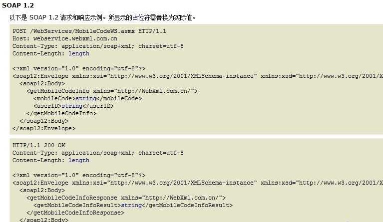

调用webservice查询手机号归属地信息
Web Services是由企业发布的完成其特定商务需求的在线应用服务,其他公司或应用软件能够通过Internet来访问并使用这项在线服务。在这里我们使用soap协议往webservice发送信息。然后得到webservice服务器返回过来的信息。
Web Services有很多种类型，在这里我们使用www.webxml.com.cn。如图：
点击进去。我们可以看到soap协议定义的内容。

import java.io.InputStream;import java.io.OutputStream;
import java.net.HttpURLConnection;
import java.net.URL;
import org.xmlpull.v1.XmlPullParser;
import android.util.Xml;
public class MobileService {
public static String findAddress(String mobile) throws Exception {
InputStream is = MobileService.class.getClassLoader()
.getResourceAsStream("mobilesoap.xml");
byte[] data = StreamTool.readStream(is);
String xml = new String(data, "UTF-8");
String soap = xml.replaceAll("\\$mobile", mobile);
byte[] result = soap.getBytes("UTF-8");
String path = "http://webservice.webxml.com.cn/WebServices/MobileCodeWS.asmx";
URL url = new URL(path);
HttpURLConnection conn = (HttpURLConnection) url.openConnection();
conn.setRequestMethod("POST");
conn.setDoOutput(true);
conn.setConnectTimeout(5 * 1000);
conn.setRequestProperty("Content-Type",
"application/soap+xml; charset=utf-8");
conn.setRequestProperty("Content-Length", String.valueOf(result.length));
OutputStream os = conn.getOutputStream();
os.write(result);
os.flush();
os.close();
InputStream isSocp = conn.getInputStream();
return parse(isSocp);
}
public static String parse(InputStream is) throws Exception {
XmlPullParser parser = Xml.newPullParser();
parser.setInput(is, "UTF-8");
int event = parser.getEventType();
while (event != XmlPullParser.END_DOCUMENT) {
switch (event) {
case XmlPullParser.START_TAG:
if ("getMobileCodeInfoResult".equals(parser.getName())) {
return parser.nextText();
}
break;
}
event = parser.next();
}
return null;
}
}
import java.io.ByteArrayOutputStream;
import java.io.InputStream;
public class StreamTool {
/**
* 读取输入流数据
* @param is
* @throws Exception
*/
public static byte[] readStream(InputStream is) throws Exception {
ByteArrayOutputStream os = new ByteArrayOutputStream();
byte[] buffer = new byte[2048];
int len = 0;
while ((len = is.read(buffer)) != -1) {
os.write(buffer, 0, len);
}
is.close();
return os.toByteArray();
}
}